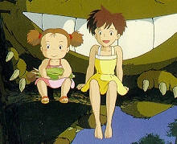
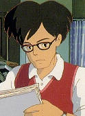
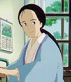
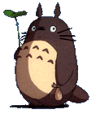
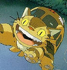

|  | Mei is a 5 year old girl. She has a very curious mind and not afraid of being adventurous. Although Mei is a very happy girl most of the time, there are times when the absence of her mother strikes her. Fortunately, Mei has her older sister Satsuki to whom she looks up to. Mei was the first to see Totoro and when she got lost while trying to go to her mother, it was only because of Totoro and Neko Bus' help that Satsuki was able to find her. |
| Although Satsuki is only a 11 year old girl, she has had to face greater responsibility ever since her mother was indefinitely admitted into the hospital for tuberculosis. She is a very open-minded person and possess the innocence of children as shown by her quick acceptance of Totoro and her ability to see it. Satsuki is a very outgoing and happy person and is able to make friends and adapt quickly to her surroundings. When she first arrived at her new home, Satsuki did not quite hit it off with Kanta right away. However, Satsuki soon learns Kanta is actually a very nice person and they eventually become good friends. |
|  | Mr. Kusakabe is Satsuki and Mei's Father. He loves his daughters very much and often takes part in the girls games and encourage their imaginations. He is a university professor. |
|  | Mrs. Kusakabe is Satsuki and Mei's mother. She is sick with tuberculosis and the reason why the family moved to the rural country side. She was admitted to the local hospital which offerd the best care for the illness and the family decided it would be best for her to recuperate in the countryside where the air is fresh and land healthy with the sun's rays. Having been away from her daughters for such a long time, Mrs. Kusakabe looks forward to the day when she can finally return home and give her daughters their much needed attention. |
|  | Totoro is the guardian of the forest and can only be seen by children and can appear or disappear as he wishes. He possess special ability such as being able to make plants grow, fly in the sky, and call Neko Bus. |
|  | Neko Bus (The Cat Bus) travels at the speed of light. Being connected to nature, when Neko Bus wants to, the trees will part for him to clear his path. Neko Bus can also run on tree tops, or on phone wires and no one would even be aware of his presence except perhaps sensing a small gust of wind. The reason being is that it posses the power to be invisible. |